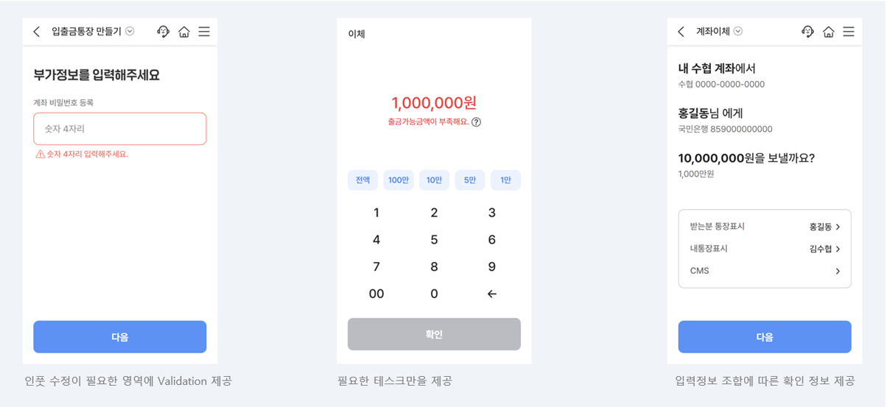

- Foundation
- Typography
- Iconography
- Colors
- Illustration
- Motion
- Validation
- Writing
Validation
- Definition
- 불필요한 테스크를 최소화하고 사용자의 액션 또는 입력값에 대한 명확한 피드백을 제공한다.
- Principle
- 1Validation의 내용이 심각한 오류로 인지될 수 있는 Alert, Commit, Modal Window를 사용하여 서비스 사용 흐름을 끊지 않아야 한다.
- 2사용자에게 필요한 테스크만을 제공하여 Validation으로 인해 사용자가 실패를 경험하는 상황을 최소화 시켜야 한다.
- 3사용자가 입력한 값의 오류가 있을 경우 인풋 영역에서 즉각적인 Validation을 사용하여 수정이 필요한 인풋 영역을 명확히 인지 할 수 있도록 해야한다.
- 4네트워크 유실 (Alert), 접근권한 (Commit)의 경우 이외의 상황에서 Modal Window를 사용하는 것을 지양하며, 사용자의 진행 테스크를 저지해야 하는 경우, 바텀시트로 대체하여 사용할 수 있다.
- Usage
